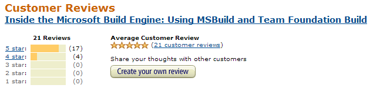

buy it now
Reviews Snippets
On Amazon.com we have 21 reviews with 4+ stars. 
-
Jeremy Jenkins - A "must have" for any budding build master
This book quite simply in my humble opinion, is a "must have" for anybody that is serious in learning the art of build mastering and is a "must have" for build masters as an A+ reference. Kudos to Sayed and William for writing this much needed gem. Well done.
-
Dan Moseley (dev on MSBuild team) - The missing MSBuild manual
I consider this something like the missing manual. Unfortunately there aren't many other MSBuild books; fortunately Sayed did a good job on this one.
-
Red M. All - Best book on the subject, hands down
This is the best source to get going from beginner to intermediate level with MSBuild and Team Build. ... I highly recommend this book to anyone who is both new or experienced with MSBuild or Team Build. Great work!
-
Aaron Seet - Must-read for every build developer
I wished Inside the Microsoft Build Engine: Using MSBuild and Team Foundation Build was published last year when I needed it. Any build engineer or developing tinkering with project builds, absolutely needs to read this book. It will fill many of the blanks the standard documentation never provided, and widen your search for better ideas to improve your build.
-
Paul Selormey - Highly Impressed
This is a well written book on the MSBuild system. This book is all that I was waiting for, it is worth the price. The explanations are simply and very clear - easy to understand language.
-
Davin Mickelson
First off, this is a fantastic book. I used the 1st edition with TFS 2008. This new edition includes great content for the new, completely revamped, build workflow process in TFS 2010.
-
Mohammad Jalloul - The Definitive Companion on MSBuild and Team Build 2008
This book is well worth every penny you spend on it. I enjoyed it a lot. That's why I now highly recommend this book to anyone interested in understanding and leveraging Team Build
-
Richard Ruge - 2nd Edition: Practical Features are Covered
Overall the book has a lot of MSBuild detail, it fills in many gaps that are missing from Microsoft's documentation, and it demonstrates some practical features that anyone using MSBuild would find useful. This is for the developer or build master that would like to learn a little or a lot more on tweaking the MSBuild engine.
-
Pyanfar Chanur - Absolutely Essential in TFS 2008
I highly recommend this book to anyone who plans on using any form of automated build system, be it custom Web Deployment Projects or automated build & deployment in a Visual Studio Team System environment: it demystifies both Visual Studio and Team Foundation Server.
-
Great reference, examples , and support!
This is a great reference to understanding MSbuild and the other Microsoft technology that depends on it. Even if you do not use TFS in your build cycle this is a must have book.
-
MSBuild unmystified
This book is an absolute must if you want to do anything useful in MSBuild. There is a baffling lack of MSBuild documentation on MSDN and there are not enough examples and tutorials in blogs to fill in MSDN's vast documentation gap. Buy this book if you need to learn the basics and inner workings of:
-
Shawn Burke - Bought for development team; imediately helped
I only got through the fundemental chapters on msbuild but I felt it was very well written and gives plenty of sample code to dig through. Those chapters alone gave me a pretty decent understanding how project files work for the build process.
-
Gökhan Öztürk - Great book for the BuildMaster
This book is a real practical approach, explains the main idea from top to bottom and helps to be a senior buildmaster even if you are junior. Less technical sources help you gain that much experience in a limited time.
-
Steven Koh "izy100" - Great book
This is a great book like what all had said
-
Good source of reference information
This book made a huge difference in helping me achieve a clean and efficient implementation
-
The best book for learning MSBuild
If I had this book when I started it would have taken only about a month (or probably much less) to know what I learned in a year without this book. The first 3 chapters are enough to teach you all the basics needed to get you started, the remaining chapters are more into the advanced topics. One of the best things about this book is that the writing style is very lucid and the topics are very well organized, much better than the author's previous book. I would recommend this book to anybody who wants to learn about MSBuild.Definitely a 5 star book.
-
The book that everyone who does builds with Visual Studio needs
Having said that, if you are new to MSBuild then this is a great book. It very quickly introduces you to the basics of MSBuild (which you all use anyway if you use Visual Studio 2005 or greater) and how to quickly customize MSBuild to suit your needs. If you are already familiar with MSBuild, you will learn more. If you use TFS Build on top of MSBuild then you will learn even more.